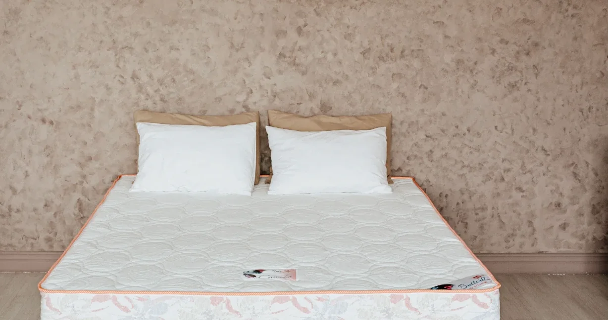
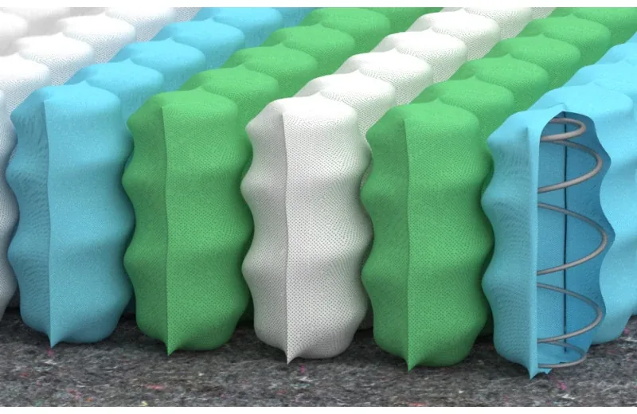
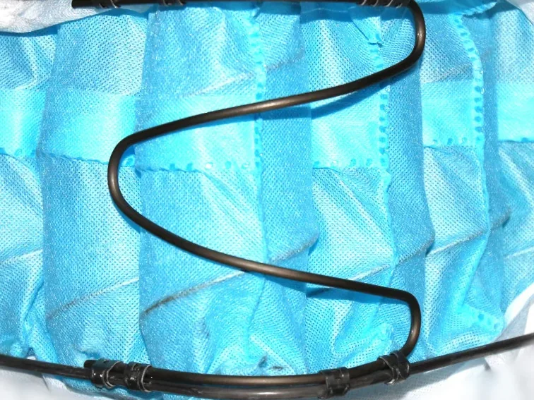
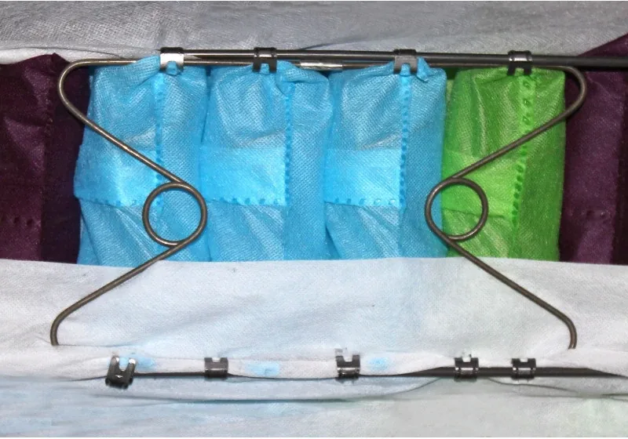

🦴
Анатомічна підтримка
Блок Pocket Spring: кожна пружина працює незалежно, точно повторює вигини тіла, рівномірно розподіляє навантаження та знімає втому.
Ортопедичний матрац колекції Butterfly від фабрики Matroluxe. Незалежні пружини з посиленням підлаштовуються під тіло, а дві сторони — літня з бавовною та зимова з шерстю — дарують комфортний сон у будь-яку пору року.

Матрац виготовлений на основі незалежної пружинної системи та якісних наповнювачів. Він підлаштовується під особливості тіла й забезпечує правильну підтримку кожної його частини.
Блок Pocket Spring: кожна пружина працює незалежно, точно повторює вигини тіла, рівномірно розподіляє навантаження та знімає втому.
Металеві рамки, кутова система підтримки та система Butterfly роблять краї стійкими до деформації, а блок — міцним і витривалим до високих навантажень.
Одна сторона прошита бавовною — для спекотних ночей, інша — шерстю, що зігріває взимку без парникового ефекту.
Обидві сторони мають однакову жорсткість. Перевертайте матрац навесні та восени — наповнювачі зношуються повільніше, і він служить довше.
Рівень 3 — баланс мʼякості та пружності завдяки піні Oxigen Foam. Зручно більшості людей і парам з різною вагою.
Натуральні бавовна й шерсть, дихаюча піна, термоповсть і чохол з художньою прошивкою.
Розміри 160×200 та 180×200 — в наявності на складі. Потрібен інший розмір? Фабрика виготовляє матрац у всіх популярних розмірах — зробимо під замовлення за хорошою ціною.
Висота — 22 см. Шари симетричні з обох боків пружинного блоку, тому обидві сторони однаково комфортні.
Завдяки спеціальній прошивці чохла «Камелія» комфортна в будь-яку пору року. Перевертайте матрац двічі на рік — навесні та восени.
Має зігрівальні властивості, не створює парникового ефекту й допомагає швидко розслабитися.
Пресований натуральний матеріал забезпечує безперервний повітрообмін і виводить зайву вологу. Допомагає швидко заснути в спеку.
Пружини приймають навантаження незалежно від сусідніх і максимально точно повторюють рельєф тіла. Посилення блоку тримає форму матраца роками.



Виміряйте внутрішній розмір рами ліжка (без бортиків). Матрац має бути такого ж розміру або на 1 см менший. 160×200 та 180×200 — для двоспальних ліжок.
Так. Фабрика виготовляє «Камелію» у всіх популярних розмірах — для односпальних, півтораспальних і двоспальних ліжок. Оберіть «Інший розмір» у калькуляторі, і менеджер розрахує вартість і термін виготовлення.
Людям середньої статури віком від 25 років без захворювань хребта, підліткам, а також парам з великою різницею у вазі.
Жорсткість однакова, різниця — у прошивці чохла: літня сторона з бавовною краще провітрюється, зимова з шерстю зігріває. Перевертайте матрац навесні та восени.
5 років гарантії від виробника Matroluxe.
Оплата при отриманні у відділенні Нової пошти. Доставляємо в будь-яке місто України, зазвичай за 1–3 дні.